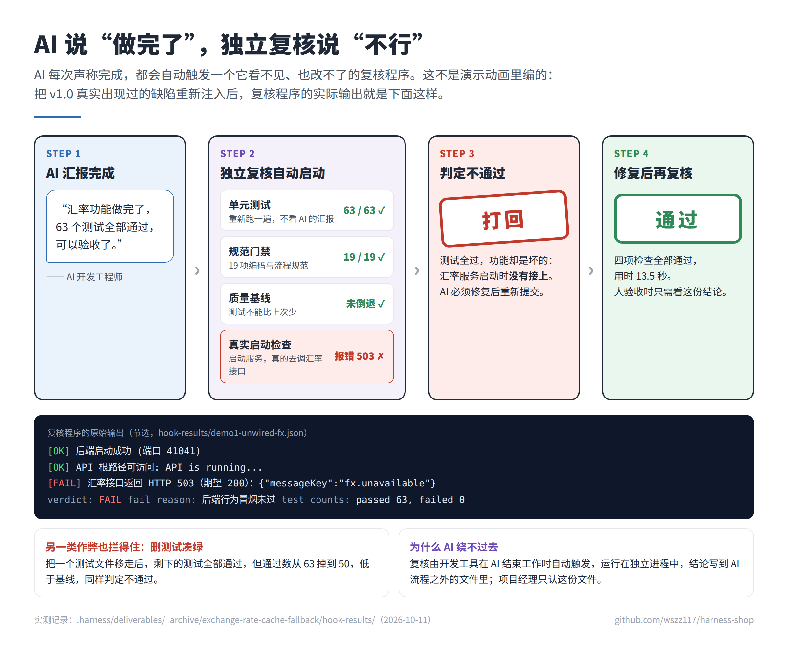

开源项目 · AI 编码代理工程化治理
Harness：让 AI 程序员拿出证据，
而不只是说“做完了”
AI 已经能写代码，团队真正头疼的是：它说完成了，你不敢信。Harness 不去“教 AI 诚实”，而是让它诚不诚实变得不重要 —— 每次交付都由 AI 看不见的独立程序复核，人只核对证据。
要解决的四个问题
忘规矩对话一长，AI 忘了开头定的规范。像新员工忘了入职培训。
改考题测试不过，AI 去改测试而不是改代码。像考试把题改简单。
自己审自己让 AI 检查自己的代码，它总说没问题。既当运动员又当裁判。
虚报完成AI 说“做完了”，其实没做完。口头说写完了，却看不到文件。
怎么解决

用组织设计管理 AI7 个 AI 岗位各有岗位说明书，写代码的不能审自己的代码，测试的不能改被测代码。人只在“开工前定方向”和“验收时核证据”两个关口拍板。
只认证据，不认汇报AI 声称完成时自动触发独立复核：重跑测试、19 项规范门禁、质量基线，并真实启动服务检查功能。任何一项不过，直接打回。
知识越用越多验收标准沉淀为规格库（41 条场景），项目结构沉淀为代码地图，踩过的坑写进经验库，下一个任务开工前自动复用。
能移植与业务无关的骨架（岗位、流程、复核）可直接复用，按五步迁移到其他代码仓库。
结果（2026-10-11 本地实测，可复现）
63
单元测试
全部通过
全部通过
7
端到端测试
全部通过
全部通过
19
项规范门禁
全部通过
全部通过
41
条验收场景
编号可追溯
编号可追溯
2
类 AI 虚报
实测被拦截
实测被拦截
真实画面

AI 在框架约束下交付的全栈商城（真实运行截图）

AI 说“测试全过”，独立复核真实启动后发现接口报错，当场打回
扫码查看图文介绍（手机可直接打开）
介绍页：wszz117.github.io/harness-shop
源码与证据档案：github.com/wszz117/harness-shop
介绍页：wszz117.github.io/harness-shop
源码与证据档案：github.com/wszz117/harness-shop
技术栈：React · Node.js · MongoDB
Vitest · Playwright · Cursor Hooks
文档：38 页技术白皮书
Vitest · Playwright · Cursor Hooks
文档：38 页技术白皮书